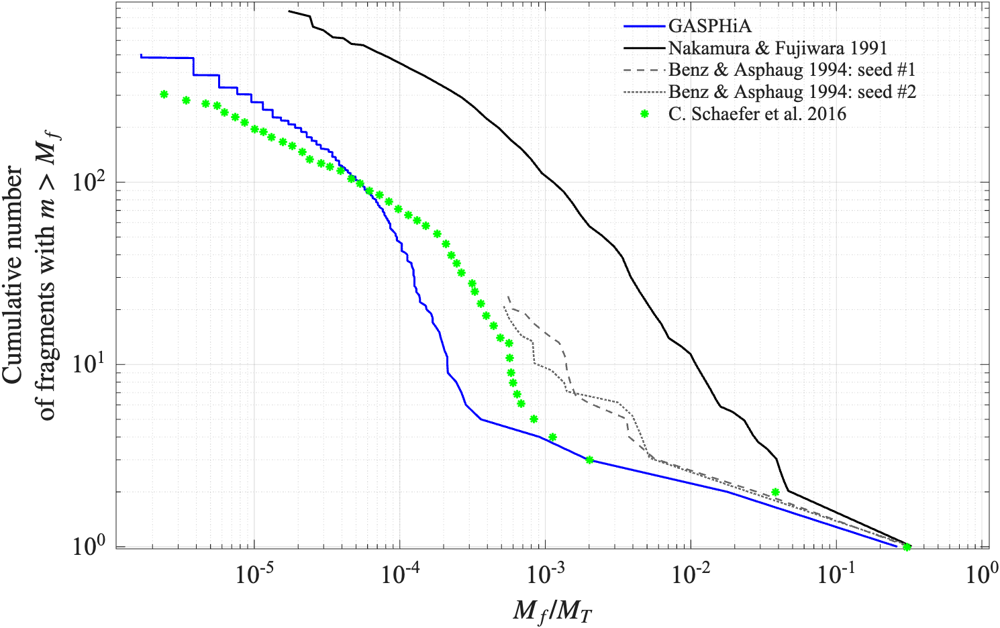

Nakamura 1991 玄武岩球撞击破碎验证
概述
本算例复现 Nakamura & Fujiwara (1991) 的玄武岩球撞击破碎实验，核心对比量是碎片质量累积分布：
> 给定一个碎片质量阈值 M_f，质量大于它的碎片共有多少个？
该类统计量对脆性损伤、断裂扩展、碎片识别及后处理算法均较为敏感，因此适合作为”破碎链路是否可用的”验证标准。
本次运行的关键数据：
- 初始总粒子数：
524065 - FoF 前经损伤阈值过滤后保留粒子：
157751 - 识别出的连通碎片总数：
1594 - 其中粒子数大于 1 的有效碎片数：
509 - 最大碎片质量约为靶球质量的
0.262

---
验证目标
- 损伤模型
- 颗粒破裂后能形成合理的碎片团簇
- 后处理算法能准确识别碎片
- 最终碎片质量分布与实验或文献趋势一致
---
物理设置与参考对象
本算例基于：
> Nakamura & Fujiwara (1991) 玄武岩球撞击破碎实验
模型设置为：
- 靶体：玄武岩球
- 弹丸：Lucite
- 主要验证量：碎片质量累积分布
输入脚本中设置的关键几何和物理量包括：
- 玄武岩靶球半径：
3 cm - 靶球密度：
2700 kg/m^3 - 弹丸密度：
1180 kg/m^3 - 弹丸初速度：
3200 m/s
运行方式
测试目录：
GASPHiA-Tests/Nakamura1991_BasaltSphereImpact
完整流程分四步：
python input/input.py
./compile.sh
CUDA_VISIBLE_DEVICES=0 ./GASPHIA -i impact.ini
python post/fast_fof.py -input output_no_bals/nakamura1991_00020.h5 -outputF post/fragments.txt
实际运行数据
本次运行与后处理提取的关键指标：
| 指标 | 数值 |
|---|---|
| 初始总粒子数 | 524065 |
| 损伤过滤后参与 FoF 的粒子数 | 157751 |
| FoF 识别总碎片数 | 1594 |
| 粒子数大于 1 的有效碎片数 | 509 |
| 最大碎片归一化质量 | 2.6208e-01 |
| 最小碎片归一化质量 | 1.6694e-06 |
| 靶球总质量 | 3.0536e-01 kg |
目前本算例使用了von mises屈服模型，有兴趣的读者可以使用lundbrog屈服模型再次运行一次，两者误差在1%左右。